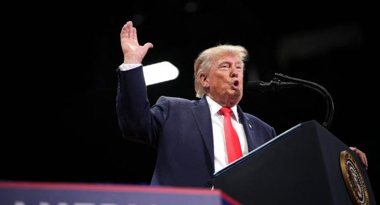

US, S.Korea, Japan Vow ‘Complete’ N.Korea Denuclearisation

The United States, South Korea and Japan reaffirmed their commitment to the “complete denuclearization” of North Korea during talks on Friday in Atlanta, held on the sidelines of a Group of 20 meeting. U.S. Secretary of State Marco Rubio, South Korean Foreign Minister Cho Hyun and Japanese Foreign Minister Toshimitsu Motegi also pledged to fully implement U.N. Security Council resolutions, including measures barring support for revenue used in North Korea’s nuclear and ballistic missile programmes.
The discussions come amid speculation about a possible meeting between U.S. President Donald Trump and North Korean leader Kim Jong Un at next month’s APEC summit in China. Trump has repeatedly expressed interest in nuclear talks with Pyongyang. Last year, he described North Korea as “sort of a nuclear power” and said he was “100 percent” open to meeting Kim, but the suggestion received no response. The United States has also scaled back joint military drills with South Korea.
North Korea has rejected disarmament and declared its nuclear arsenal permanent and irreversible, while enshrining its status as a nuclear-armed state in law. Despite long-running U.N. sanctions, the country continues to pursue its nuclear and missile programmes and is backed by Russia and China. On Saturday, Pyongyang condemned a joint statement from countries monitoring sanctions enforcement, saying sanctions could not change its position as a nuclear weapons state.
South Korean President Lee Jae Myung, who has offered talks without preconditions, suggested in September that Washington seek a freeze on North Korea’s nuclear programme rather than immediate elimination, in exchange for sanctions relief. Critics argue that such a deal could amount to accepting North Korea as a nuclear-armed state while easing pressure without requiring it to give up its weapons. Analysts and South Korea’s spy agency have also said Kim may have conveyed Pyongyang’s position on possible talks with Trump to Beijing during a recent visit to the Chinese border city of Dandong.
Source: Channels TV